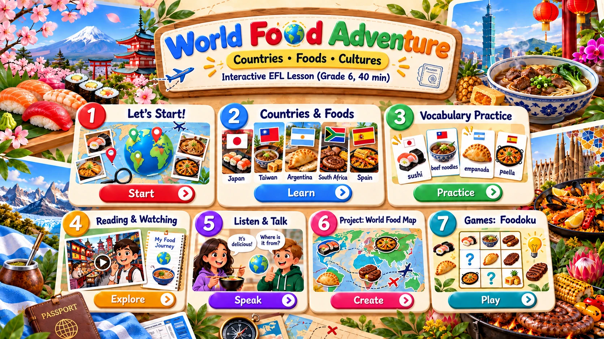

All flashcards are available. Click one to open it large.
The full flashcard stays fitted on screen. Use Previous/Next to review the whole set.
Use this presentation window any time. Closing it returns to the same lesson activity.